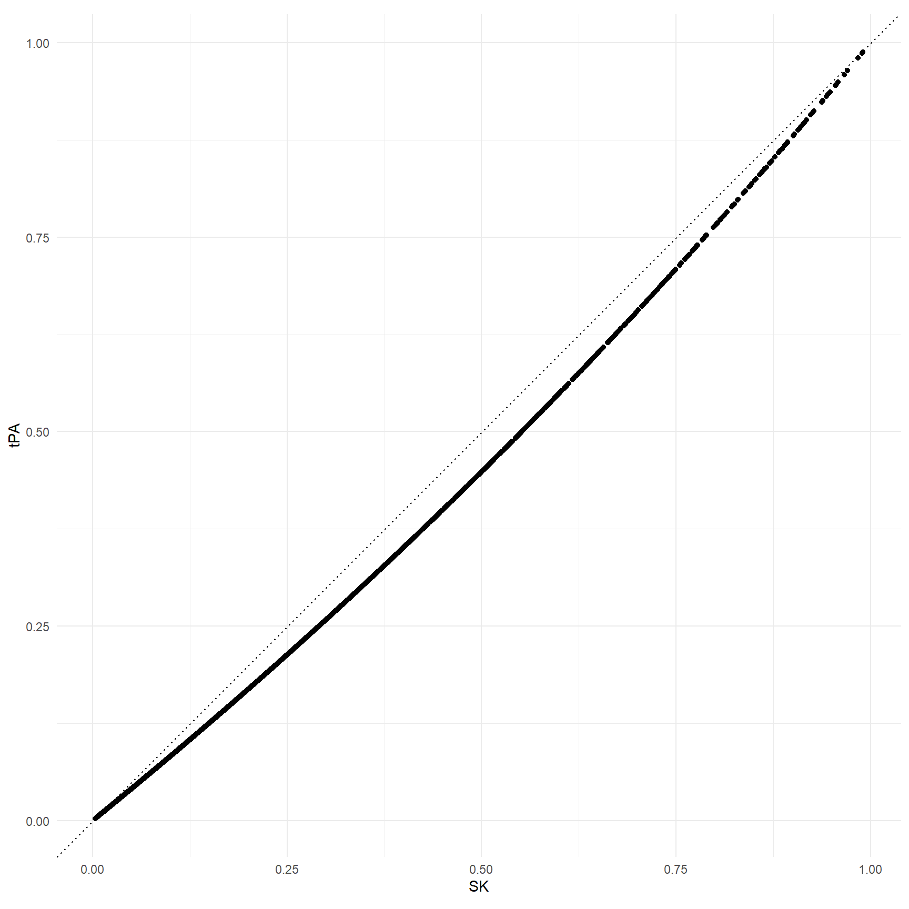
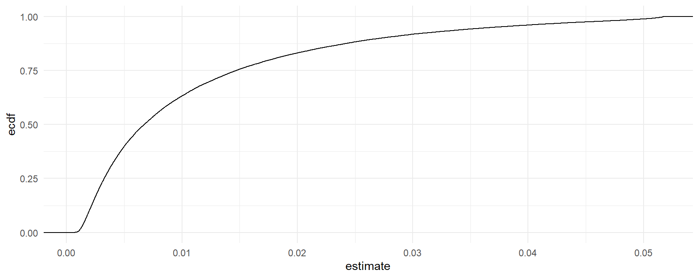
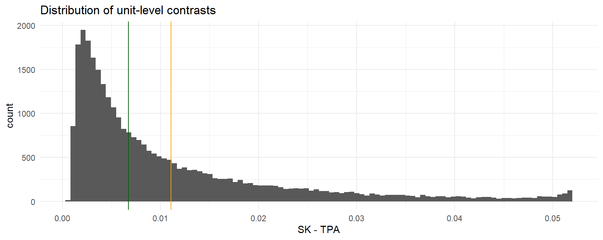

library(marginaleffects)
library(modelsummary)
library(ggplot2)
library(rms)
load(url(
"https://github.com/vincentarelbundock/modelarchive/raw/main/data-raw/gusto.rda"
))
gusto <- subset(gusto, tx %in% c("tPA", "SK"))
gusto$tx <- factor(gusto$tx, levels = c("tPA", "SK"))
mod <- glm(
day30 ~ tx + rcs(age, 4) + Killip + pmin(sysbp, 120) + lsp(pulse, 50) +
pmi + miloc + sex, family = "binomial",
data = gusto)Logit 模型
Logit · marginaleffects 官方文档中译
来源：Vincent Arel-Bundock，marginaleffects 官方文档 · Logit （GitHub 仓库，源文件
website/bonus/logit.qmd，revision870f15a0）。 网站内容 © 2025 Vincent Arel-Bundock, All Rights Reserved；marginaleffects软件代码依 GPL-3 许可。 本页为中文翻译，非原文，经原作者授权翻译并发布。 页面中的代码块由本站在渲染时真实执行。 原文中指向原书章节的交叉引用已改写为指向 marginaleffects.com 的链接（那些章节不在本次翻译范围内）。
本教程复现了 Frank Harrell 那篇出色的博文中的部分分析：Avoiding One-Number Summaries of Treatment Effects for RCTs with Binary Outcomes。这里我们展示如何用 comparisons() 轻松计算单一数字汇总，以及个体层面对比的完整分布。
Harrell 博士在上面那篇博文中讨论了 logistic 回归模型的各种汇总方式。他关注的场景是比较两个组，比如随机对照试验。他强调了呈现「单一数字汇总」（例如优势比和平均比例差）可能存在的陷阱。最后，他建议把注意力放在组间比例差的完整分布上。
为避免歧义，在 logistic 回归且所关心的协变量为分类变量的语境下，我们把下列术语作为同义词交替使用：
- 对比（Contrast）
- 比例差（Proportion difference）
- 风险差（Risk difference）
- 绝对风险降低（Absolute risk reduction）
数据
我们关注的是 GUSTO-I 研究的一个数据子集，该研究把患者随机分配到加速给药的组织型纤溶酶原激活剂（tPA）组或链激酶（SK）组。
加载所需的包和数据，并拟合一个经过协变量调整的 logistic 回归模型。
单一数字汇总
和通常一样，我们可以通过对系数取指数来得到所关心关系的单一数字汇总，也就是优势比（OR）：
modelsummary(mod, exponentiate = TRUE, coef_omit = "^(?!txSK)") | (1) | |
|---|---|
| txSK | 1.230 |
| (0.065) | |
| Num.Obs. | 30510 |
| AIC | 12428.6 |
| BIC | 12553.5 |
| Log.Lik. | -6199.317 |
| F | 173.216 |
| RMSE | 0.24 |
与优势比不同，调整后的风险差会随着控制变量取值的不同而因人而异。comparisons() 函数可以为每一个个体计算调整后的风险差。这里我们只展示其中几个：
comparisons(
mod,
variables = "tx")
#>
#> Estimate Std. Error z Pr(>|z|) S 2.5 % 97.5 %
#> 0.001074 0.000497 2.16 0.03060 5.0 0.000100 0.00205
#> 0.000857 0.000380 2.26 0.02410 5.4 0.000112 0.00160
#> 0.001780 0.000779 2.29 0.02229 5.5 0.000253 0.00331
#> 0.001137 0.000500 2.27 0.02302 5.4 0.000157 0.00212
#> 0.001366 0.000594 2.30 0.02143 5.5 0.000202 0.00253
#> --- 30500 rows omitted. See ?print.marginaleffects ---
#> 0.002429 0.000808 3.00 0.00266 8.6 0.000844 0.00401
#> 0.012130 0.003900 3.11 0.00187 9.1 0.004486 0.01977
#> 0.036812 0.010361 3.55 < 0.001 11.4 0.016505 0.05712
#> 0.022969 0.006975 3.29 < 0.001 10.0 0.009298 0.03664
#> 0.049707 0.012843 3.87 < 0.001 13.2 0.024535 0.07488
#> Term: tx
#> Type: response
#> Comparison: SK - tPA总体平均（也就是「边际」）的调整后风险差（参见这篇教程）可以用 avg_*() 系列函数或 by 参数得到：
avg_comparisons(mod, variables = "tx")
#>
#> Estimate Std. Error z Pr(>|z|) S 2.5 % 97.5 %
#> 0.0111 0.00277 4.01 <0.001 14.0 0.00566 0.0165
#>
#> Term: tx
#> Type: response
#> Comparison: SK - tPA上面的 comparisons() 函数为数据中每一个观测行计算了两种反事实情形下的死亡预测概率（day30==1）：tx 为 “SK” 时，以及 tx 为 “tPA” 时。然后它计算了这两组预测值之间的差。最后，它计算了风险差的总体平均。
除了风险差，我们还可以计算总体平均（边际）的调整后风险比：
avg_comparisons(
mod,
variables = "tx",
comparison = "lnratioavg",
transform = exp)
#>
#> Estimate Pr(>|z|) S 2.5 % 97.5 %
#> 1.18 <0.001 13.3 1.08 1.28
#>
#> Term: tx
#> Type: response
#> Comparison: ln(mean(SK) / mean(tPA))总体平均（边际）的优势比：
avg_comparisons(
mod,
variables = "tx",
comparison = "lnoravg",
transform = "exp")
#>
#> Estimate Pr(>|z|) S 2.5 % 97.5 %
#> 1.19 <0.001 13.4 1.09 1.3
#>
#> Term: tx
#> Type: response
#> Comparison: ln(odds(SK) / odds(tPA))个体层面的汇总
除了估计单一数字汇总，我们还可以用 comparisons() 关注个体层面的比例差。这个函数会把拟合好的 logistic 回归模型用于预测每一位患者的结局概率，也就是个体层面的概率。
cmp <- comparisons(mod, variables = "tx")
cmp
#>
#> Estimate Std. Error z Pr(>|z|) S 2.5 % 97.5 %
#> 0.001074 0.000497 2.16 0.03060 5.0 0.000100 0.00205
#> 0.000857 0.000380 2.26 0.02410 5.4 0.000112 0.00160
#> 0.001780 0.000779 2.29 0.02229 5.5 0.000253 0.00331
#> 0.001137 0.000500 2.27 0.02302 5.4 0.000157 0.00212
#> 0.001366 0.000594 2.30 0.02143 5.5 0.000202 0.00253
#> --- 30500 rows omitted. See ?print.marginaleffects ---
#> 0.002429 0.000808 3.00 0.00266 8.6 0.000844 0.00401
#> 0.012130 0.003900 3.11 0.00187 9.1 0.004486 0.01977
#> 0.036812 0.010361 3.55 < 0.001 11.4 0.016505 0.05712
#> 0.022969 0.006975 3.29 < 0.001 10.0 0.009298 0.03664
#> 0.049707 0.012843 3.87 < 0.001 13.2 0.024535 0.07488
#> Term: tx
#> Type: response
#> Comparison: SK - tPA展示每位患者在两种处理方案下的预测概率。
ggplot(cmp, aes(predicted_hi, predicted_lo)) +
geom_point() +
geom_abline(slope = 1, intercept = 0, linetype = 3) +
coord_fixed() +
labs(x = "SK", y = "tPA")
我们可以把个体层面比例差的完整分布表示为累积分布函数：
ggplot(cmp, aes(estimate)) + stat_ecdf()
或者把同样的信息画成直方图，并标出均值和中位数。
ggplot(cmp, aes(estimate)) +
geom_histogram(bins = 100) +
geom_vline(xintercept = mean(cmp$estimate), color = "orange") +
geom_vline(xintercept = median(cmp$estimate), color = "darkgreen") +
labs(x = "SK - TPA", title = "Distribution of unit-level contrasts")
附录
comparisons() 在背后执行的是下面这些计算：
d <- gusto
d$tx = "SK"
predicted_hi <- predict(mod, newdata = d, type = "response")
d$tx = "tPA"
predicted_lo <- predict(mod, newdata = d, type = "response")
comparison <- predicted_hi - predicted_lo原始数据集包含 30510 位患者，因此 comparisons() 生成的输出也有同样多的行数。
nrow(gusto)
#> [1] 30510nrow(cmp)
#> [1] 30510